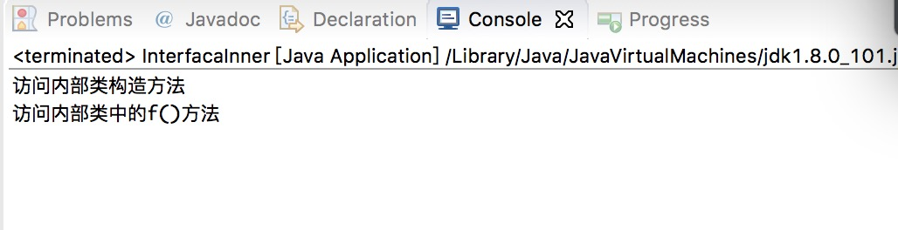
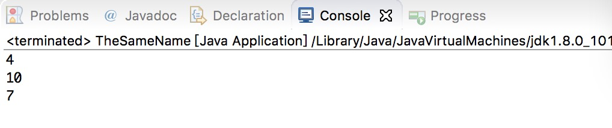

在一个类中再定义一个类，就将在类中再定义的那个类称为内部类。内部类分为成员内部类、局部内部类以及匿名类。
一、成员内部类
1、成员内部类简介
在一个类中使用内部类，可以在内部类中直接存取其所在类的私有成员变量。尽管这些类成员被修饰为private。
如果在外部类和非静态方法之外实例化内部类对象，需要使用外部类。内部类的形式指定该对象的类型。
内部类对象会依赖于外部类对象，除非已经存在一个外部类对象，否则类中不会出现内部类对象。
2.内部类向上转型为接口
如果将一个权限修饰符为private的内部类向上转型为其父类对象，或者直接向上转型为一个接口，在程序中就可以完全隐藏内部类的具体实现过程。
运行结果如图：

非内部类不能被声明为private或protected访问类型。
3、使用this关键字获取内部类与外部类的引用
|
运行结果如下图所示：

二、局部内部类
内部类不仅可以在类中进行定义，也可以在类的局部位置定义，如在类的方法或任意的作用域中均可以定义内部类。
三、匿名内部类
return语句中的返回值为一个匿名内部类
四、静态内部类
一个静态内部类中可以声明static成员，但是在非静态内部类中不可以声明静态成员。静态内部类有一个最大的特点，就是不可以使用外部类的非静态成员。
五、内部类的继承
在某个类继承内部类时，必须硬性的给予这个类一个带参数的构造方法，并且该构造方法的参数为需要继承内部类的外部类的引用，同时在构造方法体中使用a.super()语句，这样才为继承提供了必要的对象引用。